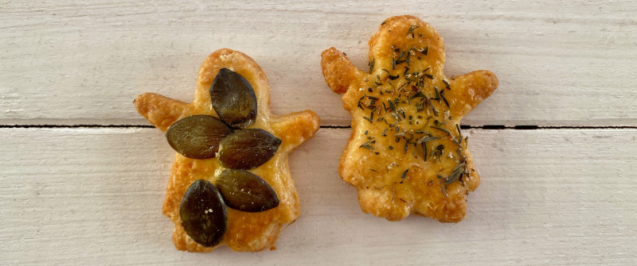

<div>
    <div class="sb-cookie-content">
        <p class="sb-cookie-head">Wir essen Cookies</strong> </p>
        <p>Und das genügt. Keine Cookies auf stadtbook.de</p>
        
        <div class="sb-info-teaser">copyright Käsekekse von Teresa</a>
        <button class="sb-cookie-button" onclick="stadtbook.cookies.accept()">OK</button>
            </div>

        <hr />
        <p class="sb-cookie-head">In eigener Sache</p>
        <p>Das Projekt stadtbook.de ist Mitte des Jahres als Event-Kalender für München nebenbei gestartet.
        </p>
        <p>
            Wir aktualisieren derzeit knapp 200 Veranstalter automatisch.
            Dabei kommen zeitnah am Tag mindestens hundert Veranstaltungen zusammen, manchmal sogar über 400.
        </p>
        <p  class="sb-cookie-head">Es gibt folgende Seiten
        </p>
        <ul>
            <li>Tagesseiten über die Linkleiste oben z.B. <a href="../index.html" style="background-color:black; color:white; padding:3px 5px 3px 5px;" class="sb-day-link ">1</a></li>
            <li>Seiten für Veranstalter/Orte z.B. <a href="../locations/ALPENVEREINMNCHENOBERLAND.html" class="sb-event-location sb-event-location-link">Alpenverein</a></li>
            <li>Rubrikseiten wie z.B. <a href="../types/Kabarett.html" class="sb-event-type sb-event-location-link">Kabarett</a></li>
            </ul>
        <p class="sb-cookie-head">Was stadtbook.de anders macht</p>
        <ul>
            <li>Alle Events auf einer Seite (Kein Paging)</li>
            <li>Direkte Links zu den Infos der Veranstalter</li>
            <li>(Noch) Keine Inhalte</li>
            <li>Externe Links zu Youtube, den Veranstalter oder Suche.</li>
        </ul>

            <p>Als thematische Linksammlungen hat stadtbook.de bei der Linksammlung Google leider schlechte Karten.</p>

        <p>Wenn Euch unser Angebot gefällt, freuen wir uns deshalb über Empfehlungen z.B. auf
            <a href="https://www.facebook.com/share.php?u=https://stadtbook.de/days/munich-2022-12-27.html" target="external" title="Empfehlen" class="sb-info-recommend"><i class="fa-brands fa-facebook"></i></a> oder
            <a href="https://twitter.com/intent/tweet?url=https://stadtbook.de/days/munich-2022-12-27.html" target="external" title="Empfehlen" class="sb-info-recommend"><i class="fa-brands fa-twitter"></i></a>.
        </p>
        <p>
            <button class="sb-cookie-button" onclick="stadtbook.cookies.accept()">OK</button>
        </p>
    </div>
</div>
